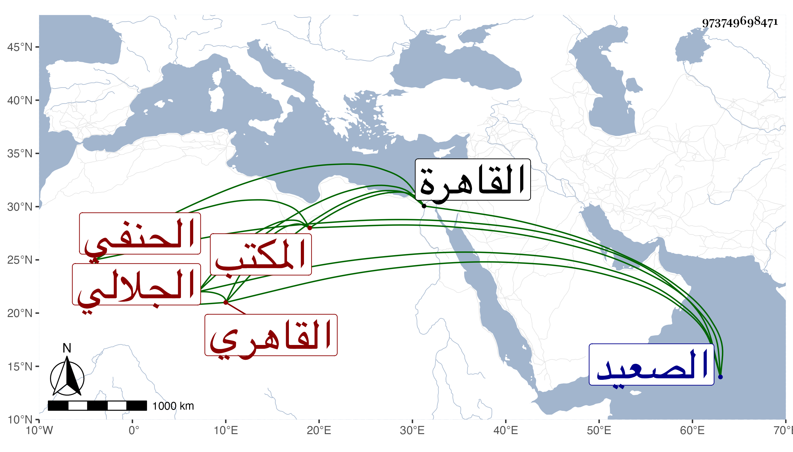

0902Sakhawi.DawLamic.ITO20230111-ara1.EIS1600.973749698471
Biography ID: 973749698471
920
يس بن محمد بن مخلوف بن أبي القسم محمد الجلالي بالتخفيف القاهري الحنفي المكتب ويعرف بيس المكتب . ولد في رمضان سنة ثلاثين وثمانمائة بجلالة من الصعيد ومات أبوه وهو صغير فقدم القاهرة وهو ابن ست فحفظ القرآن والعمدة والقدوري وألفية النحو وعرض على جماعة واشتغل عند الأمين والمحب الأقصرائيين وكتب على إبراهيم الفرنوي وفاق في النسخ وبرع فيما عداه وتصدى للتكتيب فكان ممن كتب عليه جانم مملوك جانبك الجداوي فقر به من أستاذه وصار يؤم به وعظم اختصاصه به ، وحج وجاور وممن كتب عليه حينئذ الفخري أبو بكر بن ظهيرة ، واستقر في التكتيب بالجيعانية الزينية والأشرفية برسباي وغيرهما وتوسل به الناس في قضاء حوائجهم عنده وخالقهم بتؤدة وعقل وسكون ، وبعده تقلل من الحركة إلى أن كف بصره وانجمع ببيته بعد أفعال وأعمال .
